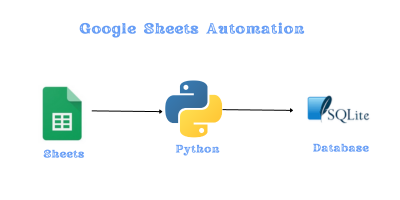

Understanding File and Directory Paths in Python#
In my journey of developing a Flask app, I had a script named load_sheet_db.py that was responsible for loading data from Google Sheets. As I dove deeper into the code, I encountered the file variable. In Python scripts, __file__ is a magical built-in global variable. It holds the path of the script that’s currently being executed, which, in my case, was load_sheet_db.py. This path can either be absolute or relative, and it hinges on the way the script was invoked.
The Power of __file__#
At the heart of this process is the built-in global variable __file__. In Python scripts, `file`` represents the path of the script currently being executed. Depending on how you invoked the script, this could be an absolute path or a relative one.
Example: If you’ve ever executed a script with:#
python some_folder/my_script.py
__file__ would contain 'some_folder/my_script.py'.
user
│
├── main_directory
│ ├── flaskr
│ │ └── load_sheet_db.py
│ │
│ └── instance
│ └── flaskr.sqlite

Resolving the Real Path: os.path.realpath()#
Symbolic links can sometimes mask the true location of your script. To avoid any ambiguities and get the actual path to your script, we use:
os.path.realpath(__file__)
This function returns the canonical path of the specified filename, eliminating any symbolic links encountered.
Finding the Parent Directory: os.path.dirname()#
Once you know the full path to your script, the next step is often to determine its parent directory. The function for this is:
os.path.dirname(os.path.realpath(__file__))
---------------------------------------------------------------------------
NameError Traceback (most recent call last)
Cell In[1], line 1
----> 1 os.path.dirname(os.path.realpath(__file__))
NameError: name 'os' is not defined
This returns the directory name of the provided path, allowing you to work relative to the script’s location.
Building Paths Intelligently: os.path.join()#
String concatenation can be tricky and error-prone when building paths, especially if you aim for cross-platform compatibility. Python offers:
os.path.join()
db_path = 'quiz.sqlite3'
conn = sqlite3.connect(db_path)
This function constructs paths by merging multiple components, ensuring they fit the OS’s path structure. Particularly useful is the ‘..’ component, which indicates moving one directory up.
dir_path = os.path.dirname(os.path.realpath(__file__))
db_path = os.path.join(dir_path, '..', 'instance', 'flaskr.sqlite')
import pandas as pd
from oauth2client.service_account import ServiceAccountCredentials
import gspread
import sqlite3
import sqlite3
import os
def get_user_information(sheet_name):
scope = ['https://spreadsheets.google.com/feeds','https://www.googleapis.com/auth/drive']
dir_path = os.path.dirname(os.path.realpath(__file__))
creds_path = os.path.join(dir_path, 'creds.json')
creds = ServiceAccountCredentials.from_json_keyfile_name(creds_path, scope)
client = gspread.authorize(creds)
industries = client.open("quizs").worksheet(sheet_name)
users = pd.DataFrame(industries.get_all_values())
return users
def make_float(x):
if x is None or x == "":
return 0.0
elif type(x) == float:
return x
elif type(x) == int:
return float(x)
else:
x = x.replace(",", "")
return float(x)
def clean_data(df, exclude_col):
cols = df.columns
for col in cols:
if col != exclude_col:
df[col] = df[col].map(lambda x: make_float(x))
return df
def get_data_from_sheets(name_of_sheet):
df = get_user_information(name_of_sheet) # assuming get_user_information is defined somewhere else
df = df.rename(columns=df.iloc[0]).drop(df.index[0])
return df
def turn_data_sqlite(sheet_name):
# ---- Access Google Sheets data and turn into pandas Dataframe ----
print("Function called") # Check if the function is entered
data = get_data_from_sheets(sheet_name)
cleaned_df = data
cleaned_df['created'] = datetime.now()
dir_path = os.path.dirname(os.path.realpath(__file__))
db_path = os.path.join(dir_path, '..', 'instance', 'flaskr.sqlite')
print(f"Database path: {db_path}") # Add this line
conn = sqlite3.connect(db_path)
print(F"{cleaned_df.shape[0]} rows {cleaned_df.shape[1]} columns are written to database")
cleaned_df.to_sql(sheet_name, conn, if_exists='append', index=False)
conn.close()
return "It is done!"
In the context of our tutorial, this effectively moves up from the script’s directory and points to a sibling directory named ‘instance’.
Wrapping Up#
Navigating file and directory paths in Python might seem daunting at first, but with the right tools, it becomes a breeze. By understanding and combining file, os.path.realpath(), os.path.dirname(), and os.path.join(), you can ensure that your scripts remain robust, no matter where they’re run from or on which system.